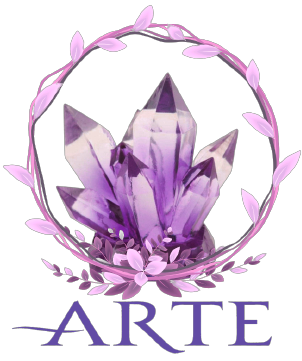

El arte es toda forma de expresión de carácter creativo que poseen los seres humanos. Es la capacidad que tiene el hombre para representar sus sentimientos, emociones y percepciones acerca de sus vivencias y el entorno que lo rodea. A través de las diferentes disciplinas artísticas, un individuo puede expresar lo que es y lo que siente mediante una infinidad de formas y técnicas entre las que se destacan el uso de recursos lingüísticos, plásticos y sonoros. En muchos países, el arte es uno de los componentes más importantes de la cultura. A lo largo de la historia, la palabra “arte” se ha ido expandiendo por todo el mundo en todas sus formas. Antiguamente, solo se consideraba arte a algunas disciplinas, como la pintura, el dibujo, el canto, la literatura y la danza. Hoy el concepto de arte abarca muchas más técnicas y formas. El avance de la tecnología es uno de los pilares fundamentales que permitieron la creación y el desarrollo de nuevas formas de arte. Sin embargo, no todos los historiadores y filósofos están de acuerdo con la definición de arte actual. Comúnmente, el término “arte” es confundido con el de «artesano». Un artesano es aquel que reproduce múltiples obras y las comercializa, mientras que, tradicionalmente, se considera que el arte se basa en obras únicas e irrepetibles. Fuente: https://concepto.de/arte/#ixzz7Q5d84LI6